- 00 开篇词 为什么你要学习编译原理？.md.html
- 01 理解代码：编译器的前端技术.md.html
- 02 正则文法和有限自动机：纯手工打造词法分析器.md.html
- 03 语法分析（一）：纯手工打造公式计算器.md.html
- 04 语法分析（二）：解决二元表达式中的难点.md.html
- 05 语法分析（三）：实现一门简单的脚本语言.md.html
- 06 编译器前端工具（一）：用Antlr生成词法、语法分析器.md.html
- 07 编译器前端工具（二）：用Antlr重构脚本语言.md.html
- 08 作用域和生存期：实现块作用域和函数.md.html
- 09 面向对象：实现数据和方法的封装.md.html
- 10 闭包： 理解了原理，它就不反直觉了.md.html
- 11 语义分析（上）：如何建立一个完善的类型系统？.md.html
- 12 语义分析（下）：如何做上下文相关情况的处理？.md.html
- 13 继承和多态：面向对象运行期的动态特性.md.html
- 14 前端技术应用（一）：如何透明地支持数据库分库分表？.md.html
- 15 前端技术应用（二）：如何设计一个报表工具？.md.html
- 16 NFA和DFA：如何自己实现一个正则表达式工具？.md.html
- 17 First和Follow集合：用LL算法推演一个实例.md.html
- 18 移进和规约：用LR算法推演一个实例.md.html
- 19 案例总结与热点问题答疑：对于左递归的语法，为什么我的推导不是左递归的？.md.html
- 20 高效运行：编译器的后端技术.md.html
- 21 运行时机制：突破现象看本质，透过语法看运行时.md.html
- 22 生成汇编代码（一）：汇编语言其实不难学.md.html
- 23 生成汇编代码（二）：把脚本编译成可执行文件.md.html
- 24 中间代码：兼容不同的语言和硬件.md.html
- 25 后端技术的重用：LLVM不仅仅让你高效.md.html
- 26 生成IR：实现静态编译的语言.md.html
- 27 代码优化：为什么你的代码比他的更高效？.md.html
- 28 数据流分析：你写的程序，它更懂.md.html
- 29 目标代码的生成和优化（一）：如何适应各种硬件架构？.md.html
- 30 目标代码的生成和优化（二）：如何适应各种硬件架构？.md.html
- 31 内存计算：对海量数据做计算，到底可以有多快？.md.html
- 32 字节码生成：为什么Spring技术很强大？.md.html
- 33 垃圾收集：能否不停下整个世界？.md.html
- 34 运行时优化：即时编译的原理和作用.md.html
- 35 案例总结与热点问题答疑：后端部分真的比前端部分难吗？.md.html
- 36 当前技术的发展趋势以及其对编译技术的影响.md.html
- 37 云编程：云计算会如何改变编程模式？.md.html
- 38 元编程：一边写程序，一边写语言.md.html
- 加餐 汇编代码编程与栈帧管理.md.html
- 用户故事 因为热爱，所以坚持.md.html
- 第二季回归 这次，我们一起实战解析真实世界的编译器.md.html
- 结束语 用程序语言，推动这个世界的演化.md.html
- 捐赠
18 移进和规约：用LR算法推演一个实例
到目前为止，我们所讨论的语法分析算法，都是自顶向下的。与之相对应的，是自底向上的算法，比如本节课要探讨的LR算法家族。
LR算法是一种自底向上的算法，它能够支持更多的语法，而且没有左递归的问题。第一个字母L，与LL算法的第一个L一样，代表从左向右读入程序。第二个字母R，指的是RightMost（最右推导），也就是在使用产生式的时候，是从右往左依次展开非终结符。例如，对于“add->add+mul”这样一个产生式，是优先把mul展开，然后再是add。在接下来的讲解过程中，你会看到这个过程。
自顶向下的算法，是递归地做模式匹配，从而逐步地构造出AST。那么自底向上的算法是如何构造出AST的呢？答案是用移进-规约的算法。
本节课，我就带你通过移进-规约方法，自底向上地构造AST，完成语法的解析。接下来，我们先通过一个例子看看自底向上语法分析的过程。
通过实例了解自底向上语法分析的过程
我们选择熟悉的语法规则：
add -> mul
add -> add + mul
mul -> pri
mul -> mul * pri
pri -> Int | (add)
然后来解析“2+3*5”这个表达式，AST如下：
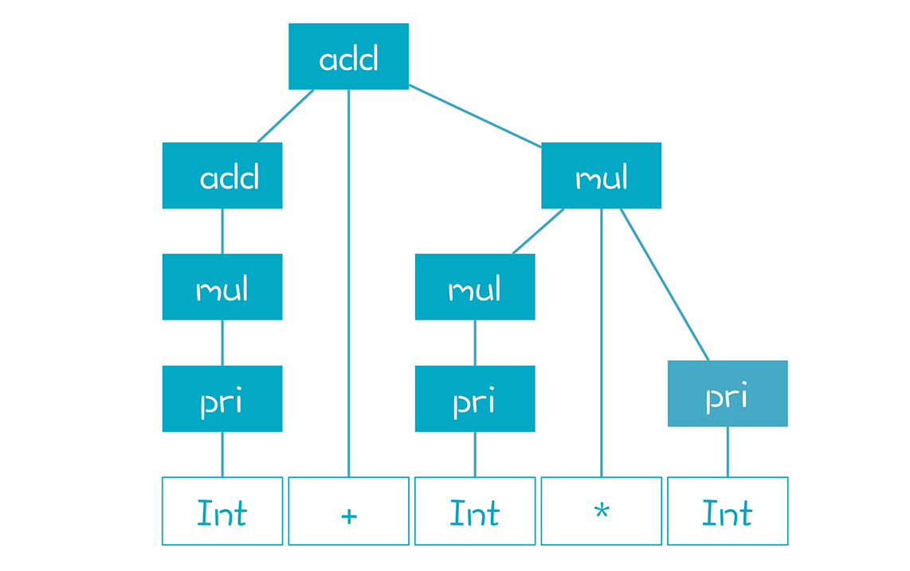
我们分步骤看一下解析的具体过程。
第1步，看到第一个Token，是Int，2。我们把它作为AST的第一个节点，同时把它放到一个栈里（就是图中红线左边的部分）。这个栈代表着正在处理的一些AST节点，把Token移到栈里的动作叫做移进（Shift）。
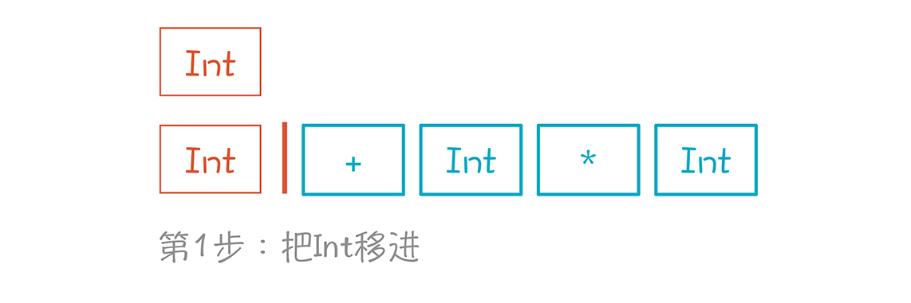
第2步，根据语法规则，Int是从pri推导出来的（pri->Int），那么它的上级AST肯定是pri，所以，我们给它加了一个父节点pri，同时，也把栈里的Int替换成了pri。这个过程是语法推导的逆过程，叫做规约（Reduce）。
Reduce这个词你在学Map-Reduce时可能接触过，它相当于我们口语化的“倒推”。具体来讲，它是从工作区里倒着取出1到n个元素，根据某个产生式，组合出上一级的非终结符，也就是AST的上级节点，然后再放进工作区（也就是竖线的左边）。
这个时候，栈里可能有非终结符，也可能有终结符，它仿佛是我们组装AST的一个工作区。竖线的右边全都是Token（也就是终结符），它们在等待处理。

第3步，与第2步一样，因为pri只能是mul推导出来的，产生式是“mul->pri”，所以我们又做了一次规约。
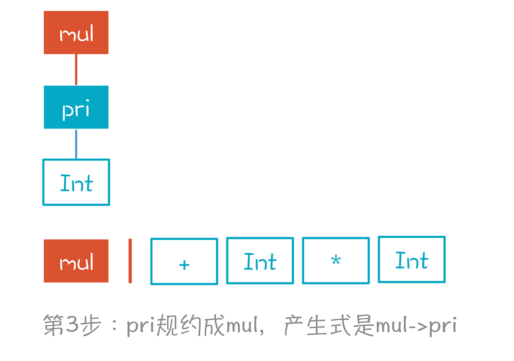
第4步，我们根据“add->mul”产生式，将mul规约成add。至此，我们对第一个Token做了3次规约，已经到头了。这里为什么做规约，而不是停在mul上，移进+号，是有原因的。因为没有一个产生式，是mul后面跟+号，而add后面却可以跟+号。

第5步，移进+号。现在栈里有两个元素了，分别是add和+。
第6步，移进Int，也就是数字3。栈里现在有3个元素。

第7到第8步，Int规约到pri，再规约到mul。
到目前为止，我们做规约的方式都比较简单，就是对着栈顶的元素，把它反向推导回去。

第9步，我们面临3个选择，比较难。
第一个选择是继续把mul规约成add，第二个选择是把“add+mul”规约成add。这两个选择都是错误的，因为它们最终无法形成正确的AST。
第三个选择，也就是按照“mul->mul*pri”，继续移进 *号 ，而不是做规约。只有这样，才能形成正确的AST，就像图中的虚线。
第10步，移进Int，也就是数字5。
第11步，Int规约成pri。
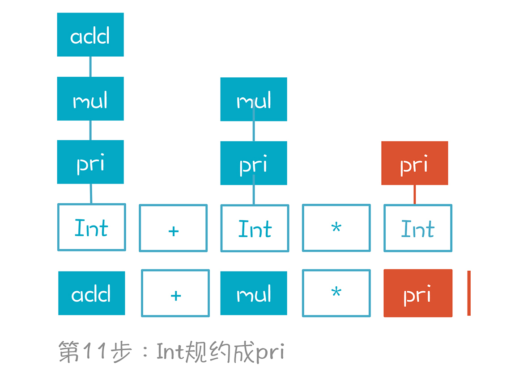
第12步，mul*pri规约成mul。
注意，这里也有两个选择，比如把pri继续规约成mul。但它显然也是错误的选择。
第13步，add+mul规约成add。
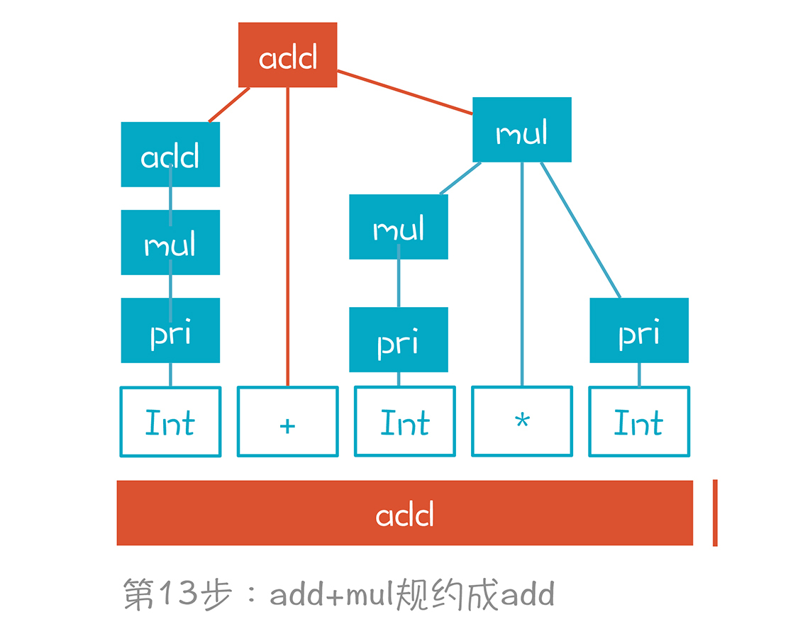
至此，我们就构建完成了一棵正确的AST，并且，栈里也只剩下了一个元素，就是根节点。
整个语法解析过程，实质是反向最右推导（Reverse RightMost Derivation）。什么意思呢？如果把AST节点根据创建顺序编号，就是下面这张图呈现的样子，根节点编号最大是13：

但这是规约的过程，如果是从根节点开始的推导过程，顺序恰好是反过来的，先是13号，再是右子节点12号，再是12号的右子节点11号，以此类推。我们把这个最右推导过程写在下面：
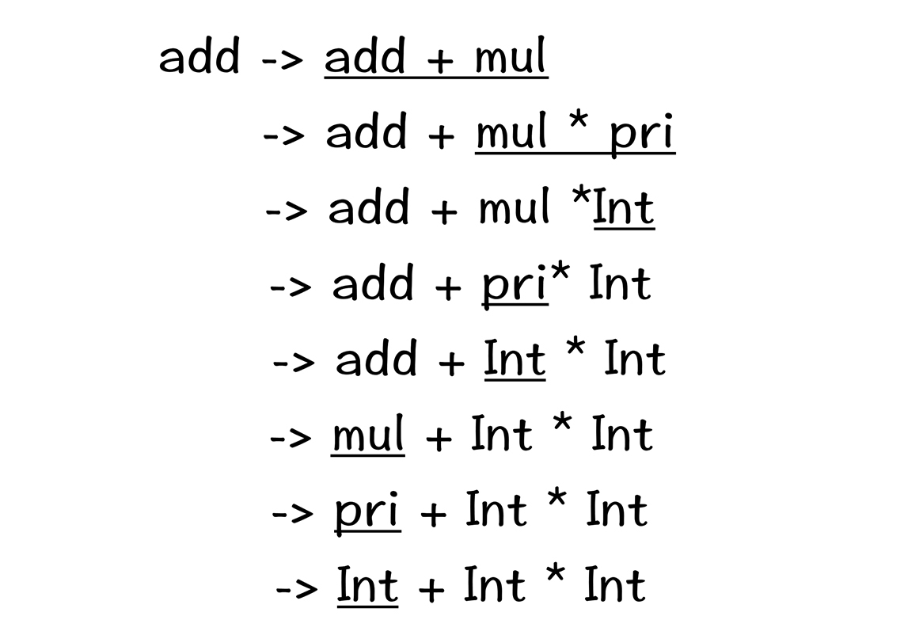
在语法解析的时候，我们是从底下反推回去，所以叫做反向的最右推导过程。从这个意义上讲，LR算法中的R，带有反向（Reverse）和最右（Reightmost）这两层含义。
在最右推导过程中，我加了下划线的部分，叫做一个句柄（Handle）。句柄是一个产生式的右边部分，以及它在一个右句型（最右推导可以得到的句型）中的位置。以最底下一行为例，这个句柄“Int”是产生式“pri->Int”的右边部分，它的位置是句型“Int + Int * Int”的第一个位置。
简单来说，句柄，就是产生式是在这个位置上做推导的，如果需要做反向推导的话，也是从这个位置去做规约。
针对这个简单的例子，我们可以用肉眼进行判断，找到正确的句柄，做出正确的选择。不过，要把这种判断过程变成严密的算法，做到在每一步都采取正确的行动，知道该做移进还是规约，做规约的话，按照哪个产生式，这就是LR算法要解决的核心问题了。
那么，如何找到正确的句柄呢？
找到正确的句柄
我们知道，最右推导是从最开始的产生式出发，经过多步推导（多步推导记做->*），一步步形成当前的局面 （也就是左边栈里有一些非终结符和终结符，右边还可以预看1到k个Token）。
add ->* 栈 | Token
我们要像侦探一样，根据手头掌握的信息，反向推导出这个多步推导的路径，从而获得正确的句柄。我们依据的是左边栈里的信息，以及右边的Token串。对于LR(0)算法来说，我们只依据左边的栈，就能找到正确的句柄，对于LR(1)算法来说，我们可以从右边预看一个Token。
我们的思路是根据语法规则，复现这条推导路径。以第8步为例，下图是它的推导过程，橙色的路径是唯一能够到达第8步的路径。知道了正向推导的路径，自然知道接下来该做什么，在第8步，我们正确的选择是做移进。

为了展示这个推导过程，我引入了一个新概念：项目（Item）。
Item代表带有“.”符号的产生式。比如“pri->(add)”可以产生4个Item，“.”分别在不同的位置。“.”可以看做是前面示意图中的竖线，左边的看做已经在栈里的部分，“.”右边的看做是期待获得的部分：
pri->.(add)
pri->(.add)
pri->(add.)
pri->(add).
上图其实是一个NFA，利用这个NFA，我们表达了所有可能的推导步骤。每个Item（或者状态），在接收到一个符号的时候，就迁移到下一个状态，比如“add->.add+mul”在接收到一个add的时候，就迁移到“add->add.+mul”，再接收到一个“+”，就迁移到“add->add+.mul”。
在这个状态图的左上角，我们用一个辅助性的产生式“start->add”，作为整个NFA的唯一入口。从这个入口出发，可以用这个NFA来匹配栈里内容，比如在第8步的时候，栈以及右边下一个Token的状态如下，其中竖线左边是栈的内容：
add + mul | *
在NFA中，我们从start开始遍历，基于栈里的内容，能找到图中橙色的多步推导路径。在这个状态迁移过程中，导致转换的符号分别是“ε、add、+、ε、mul”，忽略其中的ε，就是栈里的内容。
在NFA中，我们查找到的Item是“mul->mul.*pri”。这个时候“.”在Item的中间。因此下一个操作只能是一个Shift操作，也就是把下一个Token，*号，移进到栈里。
如果“.”在Item的最后，则对应一个规约操作，比如在第12步，栈里的内容是：
add + mul | $ //$代表Token串的结尾

这个时候的Item是“add->add+mul.”。对于所有点符号在最后面的Item，我们已经没有办法继续向下迁移了，这个时候需要做一个规约操作，也就是基于“add + mul”规约到add，也就是到“add->.add+mul”这个状态。对于任何的ε转换，其逆向操作也是规约，比如图中从“add->.add+mul”规约到“start->.add”。
但做规约操作之前，我们仍然需要检查后面跟着的Token，是不是在Follow(add)中。对于add来说，它的Follow集合包括{$ + ）}。如果是这些Token，那就做规约。否则，就报编译错误。
所以，现在清楚了，我们能通过这个有限自动机，跟踪计算出正确的推导过程。
当然了，在16讲里，我提到每个NFA都可以转换成一个DFA。所以，你可以直接在上面的NFA里去匹配，也可以把NFA转成DFA，避免NFA的回溯现象，让算法效率更高。转换完毕的DFA如下：
在这个DFA中，我同样标注了在第8步时的推导路径。
为了更清晰地理解LR算法的本质，我们基于这个DFA再把语法解析的过程推导一遍。
第1步，移进一个Int，从状态1迁移到9。Item是“pri->Int.”。

第2步，依据“pri->Int”做规约，从状态9回到状态1。因为现在栈里有个pri元素，所以又迁移进了状态8。
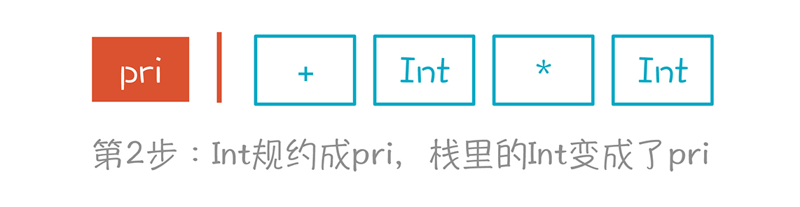
第3步，依据“mul->pri”做规约，从状态8回到状态1，再根据栈里的mul元素进入状态7。注意，在状态7的时候，下一步的走向有两个可能的方向，分别是“add->mul.”和“mul->mul.*pri”这两个Item代表的方向。
基于“add->mul.”会做规约，而基于“mul->mul.*pri”会做移进，这就需要看看后面的Token了。如果后面的Token是 *号，那其实要选第二个方向。但现在后面是+号，所以意味着这里只能做规约。
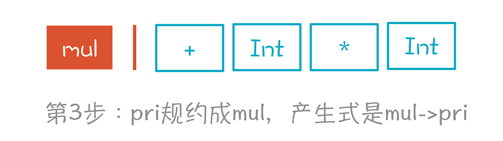
第4步，依据“add->mul”做规约，从状态7回到状态1，再依据add元素进入状态2。
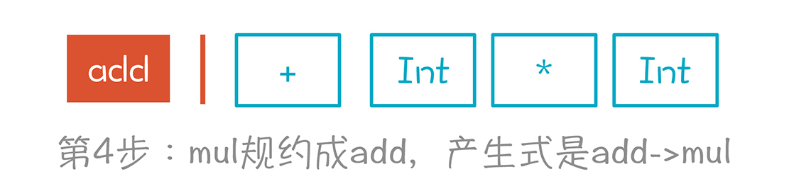
第5步，移进+号。这对应状态图上的两次迁移，首先根据栈里的第一个元素add，从1迁移到2。然后再根据“+”，从2到3。Item的变化是：
状态1：start->.add- 状态1：add->.add+mul- 状态2：add->add.+mul- 状态3：add->add+.mul
你看，通过移进这个加号，我们实际上知道了这个表达式顶部必然有一个“add+mul”的结构。
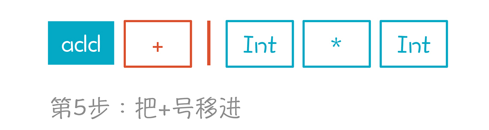
第6到第8步，移进Int，并一直规约到mul。状态变化是先从状态3到状态9，然后回到状态3，再进到状态4。
第9步，移进一个*。根据栈里的元素，迁移路径是1->2->3->4->5。

第10步，移进Int，进入状态9。

第11步，根据“pri->Int”规约到pri，先退回到状态5，接着根据pri进入状态6。

第12步，根据“mul->mul*pri”规约到mul，从而退回到状态4。

第13步，根据“add->add+mul”规约到add，从而退回到状态2。
从状态2再根据“start->add”再规约一步，就变成了start，回到状态1，解析完成。
现在我们已经对整个算法的整个执行过程建立了直觉认知。如果想深入掌握LR算法，我建议你把这种推导过程多做几遍，自然会了然于胸。建立了直觉认知以后，接下来，我们再把LR算法的类型和实现细节讨论一下。
LR解析器的类型和实现
LR算法根据能力的强弱和实现的复杂程度，可以分成多个级别，分别是LR(0)、SLR(k)（即简单LR）、LALR(k)（Look ahead LR）和LR(k)，其中k表示要在Token队列里预读k个Token。
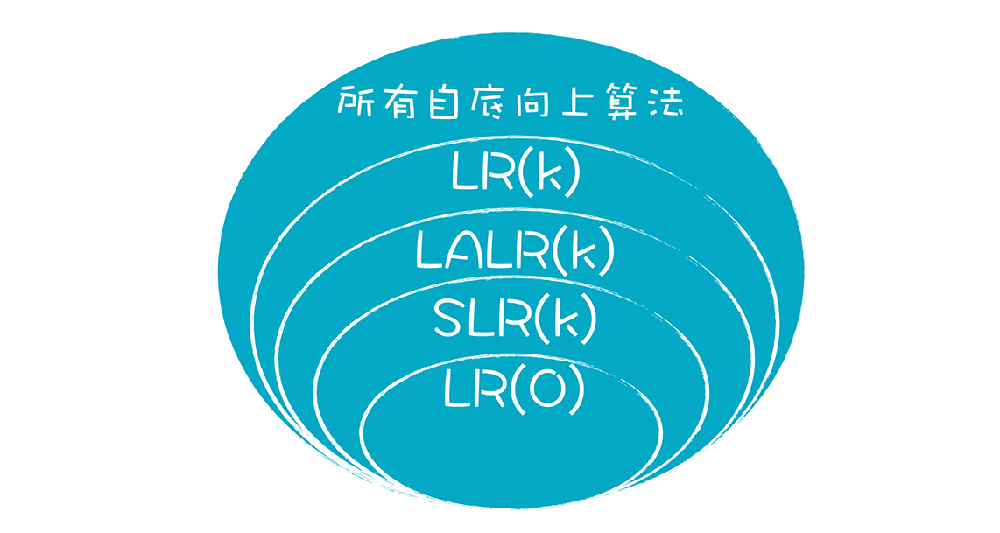
我来讲解一下这四种类型算法的特点，便于你选择和使用。
LR(0)不需要预看右边的Token，仅仅根据左边的栈就能准确进行反向推导。比如，前面DFA中的状态8只有一个Item：“mul->pri.”。如果处在这个状态，那接下来操作是规约。假设存在另一个状态，它也只有一个Item，点符号不在末尾，比如“mul->mul.*pri”，那接下来的操作就是移进，把下一个输入放到栈里。
但实际使用的语法规则很少有这么简单的。所以LR(0)的表达能力太弱，能处理的语法规则有限，不太有实用价值。就像在前面的例子中，如果我们不往下预读一个Token，仅仅利用左边工作区的信息，是找不到正确的句柄的。
比如，在状态7中，我们可以做两个操作：
- 对于第一个Item，“add->mul.”，需要做一个规约操作。
- 对于第二个Item，“mul->mul.*pri”，实际上需要做一个移进操作。
这里发生的冲突，就叫做“移进/规约”冲突（Shift/Reduce Conflict）。意思是，又可以做移进，又可以做规约，到底做哪个？对于状态7来说，到底做哪个操作，实际上取决于右边的Token。
SLR（Simple LR）是在LR(0)的基础上做了增强。对于状态7的这种情况，我们要加一个判断条件：右边下一个输入的Token，是不是在add的Follow集合中。因为只有这样，做规约才有意义。
在例子中，add的Follow集合是{+ ) $}。如果不在这个范围内，那么做规约肯定是不合法的。因为Follow集合的意思，就是哪些Token可以出现在某个非终结符后面。所以，如果在状态7中，下一个Token是*，它不在add的Follow集合中，那么我们就只剩了一个可行的选择，就是移进。这样就不存在两个选择，也不存在冲突。
实际上，就我们本讲所用的示例语法而言，SLR就足够了，但是对于另一些更复杂的语法，采用SLR仍然会产生冲突，比如：
start -> exp
exp -> lvalue = rvalue
exp -> rvalue
lvalue -> Id
lvalue -> *rvalue
rvalue -> lvalue
这个语法说的是关于左值和右值的情况，我们曾在语义分析的时候说过。在这个语法里，右值只能出现在赋值符号右边。
在状态2，如果下一个输入是“=”，那么做移进和规约都是可以的。因为“=”在rvalue的Follow集合中。
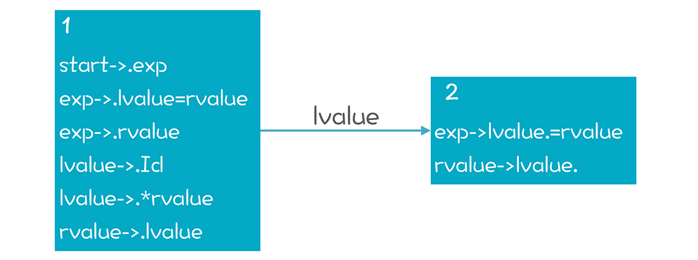
怎么来处理这种冲突呢？仅仅根据Follow集合来判断是否Reduce，不太严谨。因为在上图状态2的情况下，即使后面跟着的是“=”，我们仍然不能做规约。因为你一规约，就成了一个右值，但它在等号的左边，显然是跟我们的语法定义冲突的。
办法是Follow集合拆了，把它的每个成员都变成Item的一部分。这样我们就能做更细致的判断。如下图所示，这样细化以后，我们发现在状态2中，只有下一个输入是“$”的时候，才能做规约。这就是LR(1)算法的原理，它更加强大。
但LR(1)算法也有一个缺点，就是DFA可能会很大。在语法分析阶段，DFA的大小会随着语法规则的数量呈指数级上升，一个典型的语言的DFA状态可能达到上千个，这会使语法分析的性能很差，从而也丧失了实用性。
LALR(k)是基于这个缺点做的改进。它用了一些技巧，能让状态数量变得比较少，但处理能力没有太大的损失。YACC和Bison这两个工具，就是基于LALR(1)算法的。
课程小结
今天，我们讲了自底向上的LR算法的原理，包括移进-规约，如何寻找正确的句柄，如果基于NFA和DFA决定如何做移进和规约。
LR算法是公认的比较难学的一个算法。好在我们已经在前两讲给它做了技术上的铺垫了，包括NFA和DFA，First和Follow集合。这节课我们重点在于建立直观理解，特别是如何依据栈里的信息做正确的反推。这个直觉认知很重要，建立这个直觉的最好办法，就是像本节课一样，根据实例来画图、推导。这样，在你真正动手写算法的时候，就胸有成竹了！
到今天为止，我们已经把前端技术中的关键算法都讲完了。不过我还是想强调一下，如果想真正掌握这些算法，必须动手实现一下才行，勤动手才是王道。
一课一思
在讲自顶向下的算法时，我提到，递归思维是重要的计算机科学思维方式。而自底向上的方法，也是另一种重要的思维方式。那么，请结合你的经验，思考一下在你的领域内，是否有一些问题，用自底向上的方法能更好地解决。LR算法的移进-规约思想，能否在解决其他自底向上的问题中发挥作用？欢迎在留言区分享你的经验和思考。
最后，感谢你的阅读，如果这篇文章让你有所收获，也欢迎你将它分享给更多的朋友。
本节课的示例代码我放在了文末，供你参考。
© 2019 - 2023 Liangliang Lee. Powered by gin and hexo-theme-book.